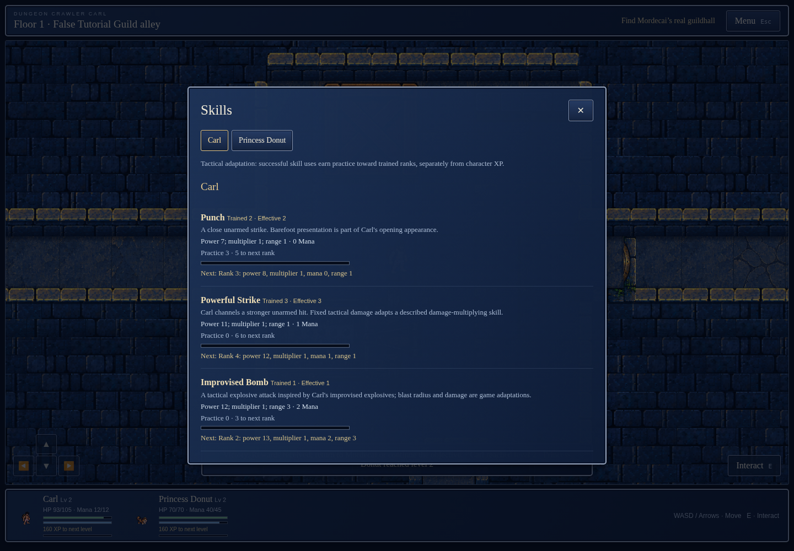
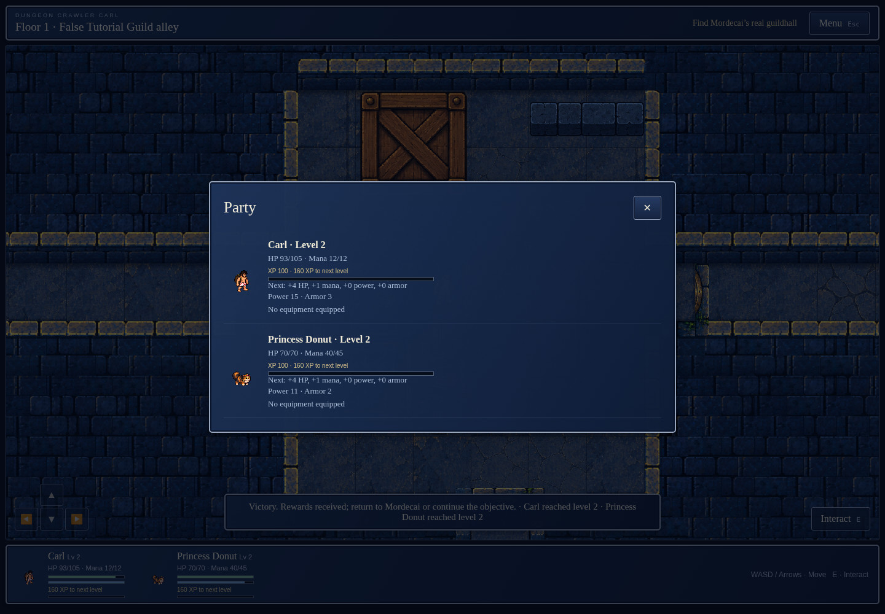
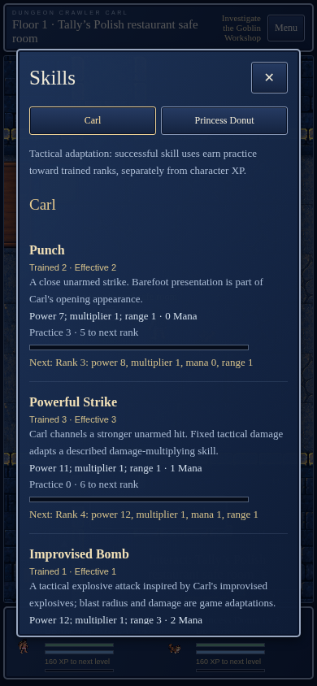
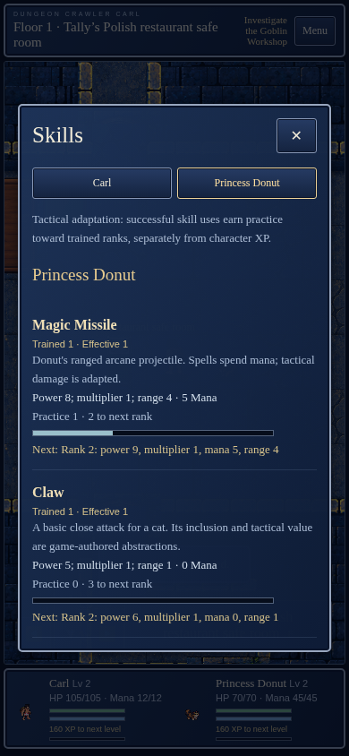
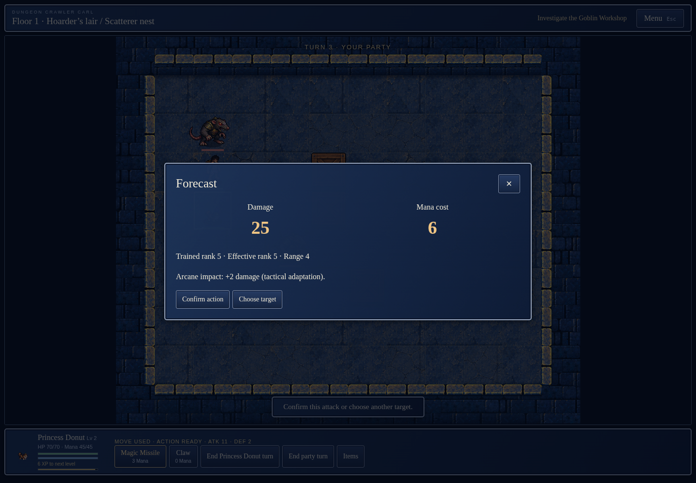
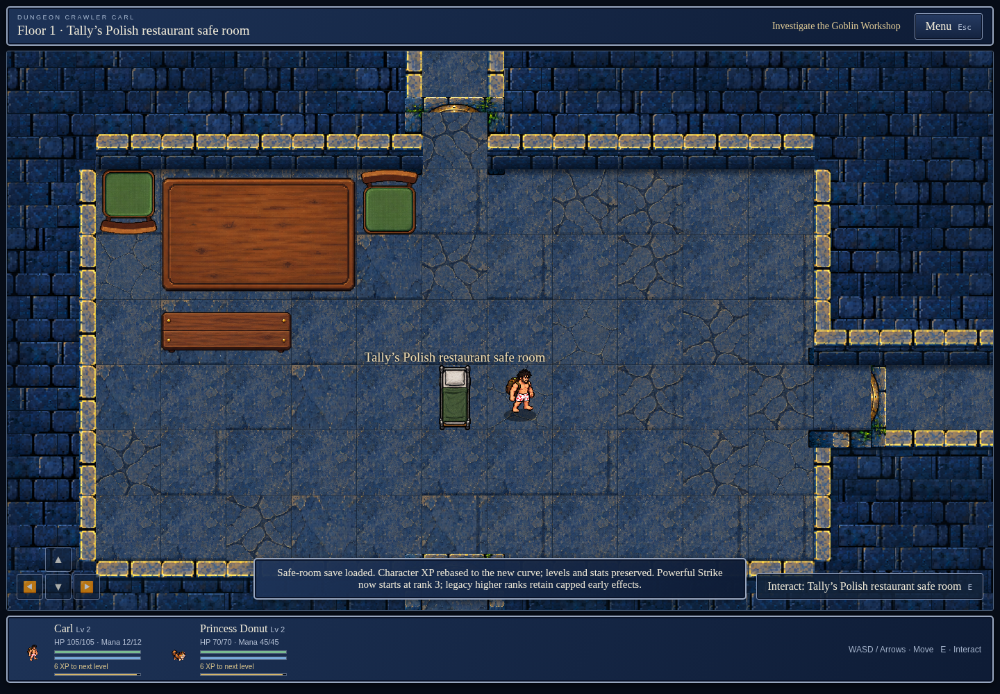

Game e62baa8f479f0598356ba521f0421c078c885796. Evidence only; no deployment.
Natural gameplay earns level 2 and Punch rank 2. Rank-5 Magic Missile is a separately disclosed migrated-save fixture, not naturally earned. Natural captures precede the metadata-only effectRank correction; final fixture captures use the final rebuilt binary.
Verification report · Provenance · Scope and reproduction · Checksums





